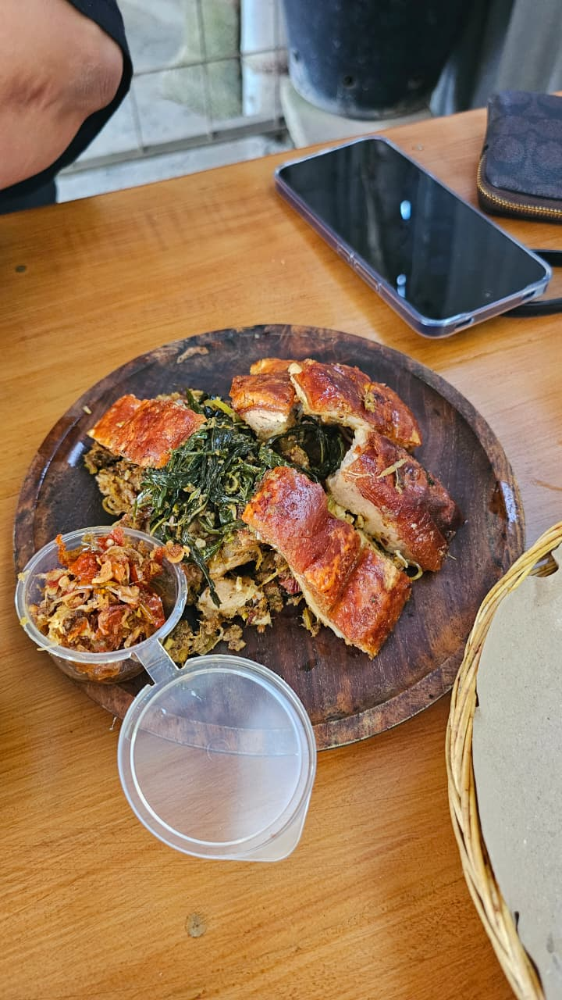
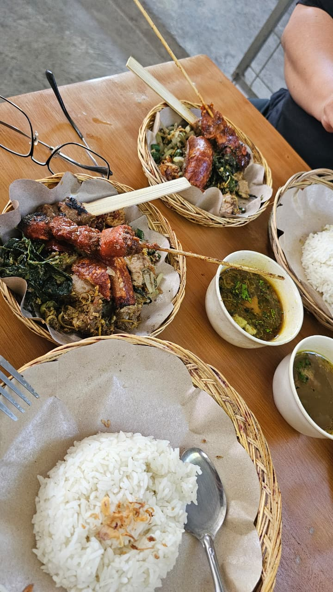
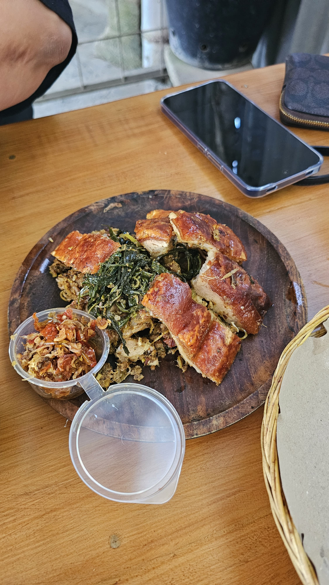

Every community has that one group chat — the one where someone drops a Google Maps pin and three people reply "been here, so good" before you've even opened it. For BaliFILs, that's Hidden Gems. Over the past few months, members have quietly built a list of places worth the drive. Twelve of them, mapped below, from a taste of home to the babi guling spot nobody can stop talking about.
At a glance
- Spots on the list12
- Areas covered7 — Kuta to Sekumpul
- Most recommendedKusina & Guling Sam-Sam
- Book ahead forHanging Restaurant & Bar
Kusina — a taste of home, no plane ticket required
If Guling Sam-Sam is the group's local discovery, Kusina is the one everyone already loved before Hidden Gems even existed — the standing answer whenever someone asks "saan pwede kumain ng Pinoy food dito?" It's the closest thing to a home-cooked Sunday lunch you'll find on the island: familiar flavors, generous portions, and a menu that reads like a greatest-hits list.
Guling Sam-Sam — the babi guling everyone keeps posting
No place has been recommended more times in the group. It first came up in April when Max posted a photo captioned "Reco — for lechon skin 👌🏻." Reymart replied within two minutes: "Been here. Really good 🤤." A few days later Jeff dropped a pin for "the Kura branch" — shorthand for Kuta. By July, Seth had found a second branch in Sangeh, and Rocky Sebio posted fresh photos captioned "Yummy! 😂" Jeff's verdict summed it up: "uy same style! matry natin next! Thank you sa reco!"
What you're getting: thin, crackling-crisp pork skin, lawar, plecing kangkung, sate lilit skewers, and a small cup of clear pork broth — cafeteria-style, in woven rattan baskets.
View on Google Maps


🗺️ Where they all are
Tap a pin to jump straight to that entry in the list below.
Map data © OpenStreetMap contributors.
The full list, numbered
Kusina
The group's all-time favorite for real Filipino comfort food — halo-halo, caldereta, pancit, BBQ, tapsilog, menudo, sinigang. See the spotlight above.
View on Google MapsGuling Sam-Sam Merekak (Kuta)
The original branch, and the one the group mentions most. Crispy-skin roast pork, lawar, sate lilit, plecing kangkung. Confirmed by Max, Reymart, Jeff, and Rocky Sebio's photos above.
View on Google MapsSamsam Ganas – Babi Genyol Pan Aplus (Sangeh)
The sister spot out in Sangeh, shared by Seth. Same babi guling family, worth the drive if you're already near Sangeh Monkey Forest.
View on Google MapsDepot Umum Batan Sabo (Merdeka / Renon branch)
A Denpasar legend running since 1970. Regulars go for the sate babi, iga bakar (grilled ribs), and what locals call the city's best sop buntut (oxtail soup). Shared by Seth.
View on Google MapsHanging Restaurant & Bar
Cliffside dining built out over the jungle canopy near Sekumpul Waterfall, north Bali. Simple Indonesian comfort food (nasi goreng, mie goreng, fresh coconuts) with a view that does the talking. Reymart's video drop came with one warning: book ahead — tables fill fast.
View on Google MapsBe Tuna (Be Tu Na)
Tabanan's tuna specialist, built its name on underused cuts — ribs, jaw, and tail — grilled simply. Myra flagged it with a note that it now has three branches around the island.
View on Google MapsWarung Bellissimo
A relaxed Sanur garden warung mixing Indonesian home-style dishes with Italian comfort food — pizza, pasta, big breakfasts. Vegan and vegetarian options, live music on weekends.
View on Google MapsBrazilian Aussie BBQ @ Kuta
Max's "churrascaria" reco, confirmed — all-you-can-eat Brazilian-style BBQ with rotisserie meat carved tableside. Also has locations in Seminyak and Sanur.
View on Google MapsDua Umalas
A nasi campur buffet counter plus à la carte BBQ and seafood, with vegan/vegetarian dishes clearly marked and a well-loved in-house bakery. Open daily, 7am–11pm.
View on Google MapsTiga Canggu
Dua Umalas' sister spot in Canggu — same easy mix of Western and Asian dishes, nasi campur salad bar, smoothie bowls, and cold-pressed juices.
View on Google MapsKomeda's Coffee (Sesetan)
A cozy, work-from-cafe-friendly Japanese coffee shop chain — power outlets at every table, free breakfast with any drink order 7–11am, plus Chicken Katsu Sandwich, Karage, and the signature Shironoir dessert.
View on Google MapsKomeda's Coffee (Legian / Dewi Sri)
The Kuta-side branch of the same Japanese café chain — same cozy vibe and menu, more convenient if you're already down south (and a short walk from Kusina and Guling Sam-Sam).
View on Google Maps🛒 Bonus: sourcing Filipino grocery staples
Not a restaurant tip, but useful: Jeff shared that Purefoods Corned Beef and select Magnolia products (BPOM and halal-certified) are now sold on Tokopedia — handy if your local toko doesn't stock them. And keep an eye on Lotte Mart's weekday promos; the group has spotted 50% off chicken, pork, and beef on random Thursday evenings.
Got a hidden gem of your own?
This list only exists because members keep sharing what they find. If you've got a spot worth the drive — a warung, a hole-in-the-wall, a market stall — drop it in the Hidden Gems chat or email us at balifilipinos@gmail.com and we'll fold it into the next update.
Photos: courtesy of BaliFILs community members (Hidden Gems group chat, July 2026). Shared with the community for this feature.